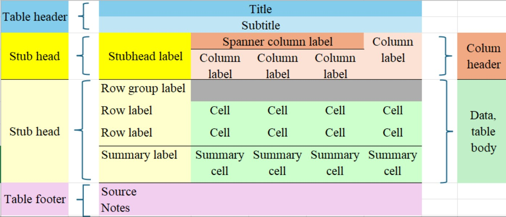

6.3 Reference tables
These are longer tables, generally used to present more complete sets of results from statistical studies. They should be limited in size to something that could be contained in a few pages of a printed report, say, with a number of rows no larger than 200, and no more than say 12 columns. Anything bigger than that should be considered for dissemination as a database like table, probably available only for download from a website or readable from some digital media.
Reference tableswill typically take core classification, domain definition or explanatory variables to define the rows, and have the outcome classification or output variables define the columns. In both directions, sorting should typically be such that it is easier for the readers to locate the data that they are most interested in, either using alphabetic or well known classifications.
Reference tables have in many cases been replaced by access to interactive databases that allow the interested user to obtain the tables they want from a website.
Tables (of all types) should be self-sustaining. The idea is that each table should have the necessary metadata, so that if copied from one location to another it still makes sense. If you can get your tables to be self-sustaining, they will be easier to understand correctly, either in or out of the original context.
Anatomy of a table. Figure XX presents the essential components of a table.

The title (and optional subtitle) of a table must provide a clear and precise indication of the data that will be presented in the table. These elements, combined, must answer the questions about what, where and when regarding the data to be presented inside the table. Be concise and avoid using verbs.
Column header elements should identify the data that is displayed in each column of the table. They must also provide much of the relevant metadata: unit of measurement, time period, geographical area, etc.
Stub elements, provided as the first column in the table, should identify the data that is displayed in each row of the table.
The source of the data must always be provided at the bottom of the table, and must indicate the organization responsible and the name of the survey or study that produced the results contained in the table. The omission of the citation of the source prevents the reader from seeking more information about the data presented, and should be avoided.
The Notes are optional, but they can be used to provide additional details about the data as needed to understand and use it correctly. Avoid using long texts, which if needed, would be better placed in a document that is then cited in the Notes section. If there is more than one Note, number sequentially, and use the numbers to indicate the corresponding calls inside the table. Make sure that the calls to Notes are sufficiently distinct from the actual figures / numbers inside te table to avoid confusion.
The Data is the most important piece of information that the user expects to get from the table. Therefore, it is essential to present them in a way that is easy to extract the relevant information. For some tables, depending on the message you want to convey, it may be easier to search for information by rows or columns. This should be the most important consideration when deciding whether to present the table in portrait or landscape orientation. Dividing lines, dotted lines, shading, and even spacing can be helpful in guiding the reader to read the table in the ‘right’ direction.
Some basic rules for presenting the data include:
- Use similar spacing for columns whenever possible;
- Avoid any unnecessary text;
- The width of the table should be only the width necessary to present the data, and not the entire width of the available space;
- Time series data should be presented in chronological order – for reference tables, in ascending order; for presentation tables, this order can be reverse or descending to display the most recent data first;
- Data on categorical variables should be presented using standard classifications; in reference tables, categories should be ordered according to the standard classification; in presentation tables, they can be presented in (descending) order of frequency to highlight the most frequent categories first;
- Use as few decimal places as possible;
- Use thousands separators; space is a better separator because it does not vary with the decimal separator according to language;
- Always align the numbers to the right, ensuring that the decimal separator (comma or period, depending on the language) are aligned;
- Never center the values unless they all have the same number of digits;
- Do not leave blank cells on the table; missing values or ‘not applicable’ situations must be identified with an appropriate symbol;
- Round the data to units that make sense in each case; aim for providing 3 or 4 significant digits in presentation tables;
- Rounding is also useful when the data is not very accurate, but be careful not to lose precision.
The recommendations provided here to reference tables should also apply to longer tables provided as databases, but these can have additional resources if they are embedded on websites. For example, there may be support for users to sort tables using the values in each column, which would be useful for large tables where the user may be looking for the higher (or lower) values in a given column.